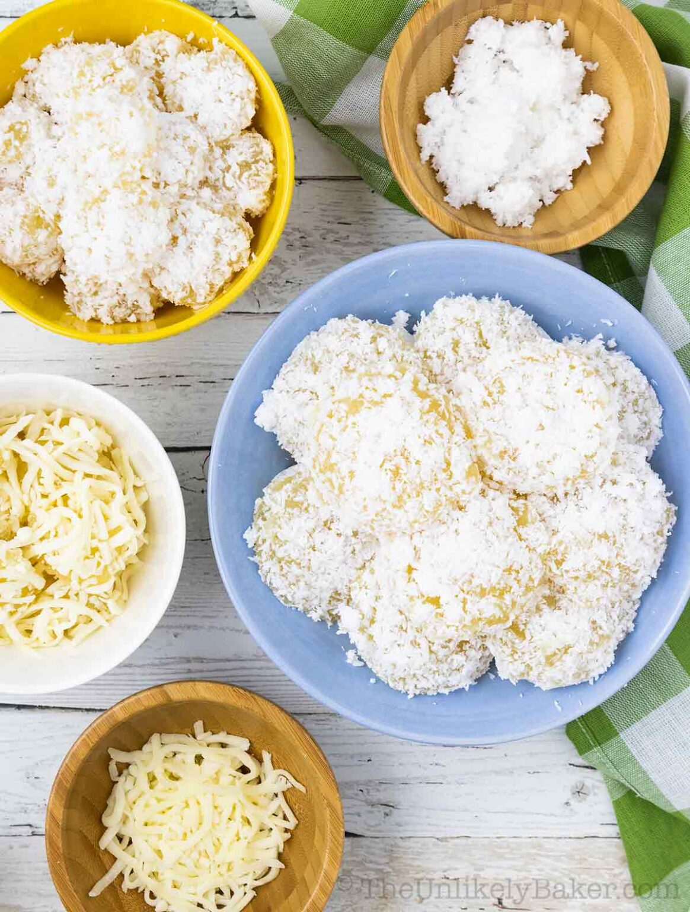

Pichi-pichi

Description
This easy pichi pichi recipe will help you make authentic Filipino pichi pichi at home. Soft and chewy, coated with coconut or cheese, one hundred percent delicious.
Ingredients
For the Pandan water
- 3 cups water
- bunch pandan leaves
For the Pichi-pichi
- 2 16-oz pack frozen grated cassava thawed, and drained if excessively liquidy
- 1 cup granulated sugar
- 2 cups pandan water can substitute with plain water
- 1 tsp lye water
- ½ tsp pandan extract
- grated coconut
- grated cheese
Steps
To Make Pandan Water
- Place a bunch of pandan leaves in a pot with 3 cups of water and bring to a boil.
- Bring down to a simmer and cook for 30 minutes or until you start to smell that lovely pandan smell.
- Take out the pandan leaves and allow the pandan water to come down to room temperature before using
To Make Pichi-pichi
- Place all your ingredients in a bowl and stir until blended well.
- Transfer your mixture into individual moulds or into a baking pan (whatever would fit in your steamer).
- Steam the pichi pichi until completely translucent, springy and soft to the touch. How long would depend on the size of moulds you use – from 30 minutes to 1 hour.
- Allow to cool completely before removing from moulds or scooping from pan. This would allow the pichi pichi to set completely.
- Once ready, if using moulds, gently nudge the pichi pichi free.
- If using a pan, you can use a melon baller to scoop out pieces of pichi pichi. A cookie scoop for bigger pieces will work too.
- Roll the pichi pichi in grated coconut or grated cheese and enjoy!